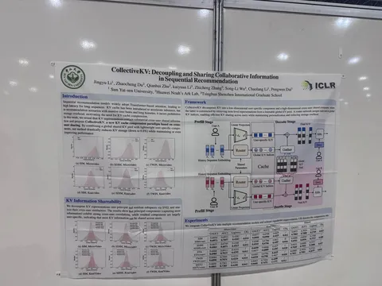

В этом году работ на тему рекомендательных технологий не так много, как хотелось бы. Делимся двумя интересными: одна — о том, как лучше использовать имеющиеся сигналы, чтобы повысить качество ранжирования, другая — об ускорении и работе с памятью.
Denoising Neural Reranker for Recommender Systems
В статье исследуют стандартный подход «ретривер + реранкер». Идея в том, чтобы немного «накостылять» — в реранкере использовать каким-то образом не только сигнал от пользователя (клики, заказы, лайки), но и информацию от ретривера.
Основной подход — учить реранкер решать задачу удаления шума. Предлагается метод DNR, в котором:
1) собираем скоры ретривера и зашумляем их;
2) учим реранкер очищать простой шум;
3) начинается adversarial learning, где также учим генератор создавать неочищаемый шум;
4) для генератора распределение зашумлённых оценок должно сходиться к распределению реальных скоров ретривера.
CollectiveKV: Decoupling and Sharing Collaborative Information in Sequential Recommendation
Трансформерные модели в рекомендациях на длинных последовательностях долго инференсятся, так как они авторегрессионные. Для ускорения инференса часто используют KV-кэши, но в случаях с длинными историями они сильно раздуваются по памяти.
Авторы предлагают следующее. KV-представления пользователей декомпозируют с помощью SVD, как в стандартной коллаборативной фильтрации. Затем выделяют две части: высокоразмерную общую KV и компактные персональные KV. При инференсе предлагается «подглядывать» и туда, и туда.
По результатам удалось сжать KV-кэш до 0,8% от его исходного размера (!), не просадив качество.
#YaICLR26
@RecSysChannel
Интересное увидел
